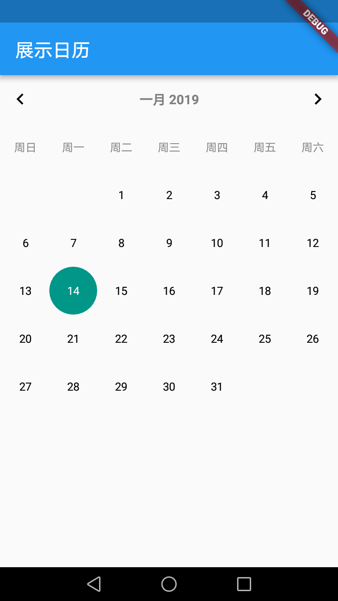

Flutter介绍
Flutter是谷歌的移动UI框架，可以快速在iOS和Android上构建高质量的原生用户界面。Flutter使用Dart作为开发框架和widget的语言。
作为一款移动应用程序SDK包含框架、控件和一些工具，Flutter可以用一套代码同时构建Android和iOS应用，并且性能可以达到原生应用一样的性能。
Flutter框架结构：

Dart语言说明
为什么Flutter选择使用Dart语言？
参考如下内容:
为什么Flutter选择使用Dart语言？
Dart语言与Java语言对比
- 所有都是对象，包括基本类型（数字、字符串、布尔值等）、方法、null，全部基于Object对象，因此初始化结果都是null，数字类型也是一样。
- Dart类型可推断，var声明即可。
- Dart支持全局变量、全局方法。
- Dart不支持权限修饰符，如果标识符以下划线(_)开头，则该标识符对其库是私有的。
- Dart构造方法可以没有方法体，直接指定具体参数。
- 方法支持可选参数，包括命名参数以及位置参数。
- 因为方法也是一个对象，因此也可以作为参数传递，支持闭包。
- 非空操作符判断，?? ??= 等
…
真正对比还有很多内容，比如as关系判断、级联表示法、胖箭头指代、异常处理、重写操作符、mixins特性、异步处理、生成器、隔离器等等。
Flutter使用说明
布局说明
Flutter不再支持xml配置文件方式（比如xml）来设置布局。所有的布局处理都是通过代码实现。
先看一个官方默认Demo：
1 | import 'package:flutter/material.dart'; |
Demo中可以看出以下几个重点内容：
- main方法是入口，里面执行
runApp方法 - 所有的View都是Widget实现，基本Widget分为两种：
StatelessWidget、StatefulWidget - MaterialApp 作为主体设计风格，支持Material Design风格，同样也可以使用CupertinoApp，支持iOS Design风格，不过需要导入
cupertino.dart包。 - Scaffold 作为整体UI框架，支持常见的UI展示方式。
Widget介绍
常用框架Widget：
MaterialApp、Scaffold、Appbar、BottomNavigationBar、TabBar、BottomAppBar等
常用布局Widget：
单个元素：Container、Padding、Center、Align等
多个元素：Row、Column、Stack、Flow、ListView等
常用控件：Image、Text、Icon、FloatingActionButton、FlatButton、TextField、Checkbox、Radio、Switch、Slider、Time Pickers SimpleDialog、AlertDialog等
界面跳转
Flutter界面跳转设计到两种类型：Flutter界面内部跳转、Flutter与Native界面之间跳转。
Flutter界面内部跳转
正常跳转
Flutter内部维护一个界面堆栈，跳转时可以直接跳转：
1 | Navigator.push(context, new MaterialPageRoute(builder: (context) => new SecondPage()),); |
也可以预先设置路由，通过路由名称进行跳转
1 | routes: { |
界面返回：
在堆栈中弹出该界面
1 | Navigator.pop(context) |
带参跳转
带参跳入很简单，只需要在需要跳转的Widget中增加参数就可以了。
带参跳出通过 Navigator.pop(context, [ T result ])中携带具体参数。
接收方需要指定返回结果，例如下面示例：
1 | Navigator.push<String>(context, |
其它跳转方式
- popAndPushNamed 退栈然后入栈一个指定name的页面
- popUntil 重复调用pop直到predicate返回true
- pushAndRemoveUntil 跳转，然后清栈
Flutter界面与Native界面跳转
Native界面跳转Flutter界面
最简单的方式，直接通过Native原生跳转，第二个Native中加载Flutter，不过这种方式不推荐。
实际上同样可以通过router指定具体的page(这部分存疑，只查到预览版使用该功能，正式版该功能未找到)，看如下代码：
1 | View flutterView = Flutter.createView( |
该方法说明见 Add Flutter to existing apps
正式版中未找到相关文档说明，不过在官方代码中有如下示例：
1 | ··· |
可以通过参数指定flutter界面的具体信息，并进行展示。
Flutter界面跳转Native界面
Flutter跳Native界面利用的是MethodChannel，也就是下面数据交互部分的内容。Flutter发送一个信号通知到Native端，执行预设的工作。
例如：
1 | new MethodChannel(getFlutterView(), CHANNEL).setMethodCallHandler( |
数据交互
Flutter与Native的互相调用，必须通过Platform Channel来实现。
Flutter定义了三种不同的Channel，分别有不同的用途：
- BasicMessageChannel：用于传递字符串和半结构化的信息
- MethodChannel：用于传递方法调用，常用于Flutter调用Native
- EventChannel: 用于数据流通信，常用与Native通知Flutter
这三种数据交互采用同样的方式，有三个相同的字段：String name、BinaryMessenger messenger、MethodCodec codec.
其中name唯一标识当前channel，messenger进行消息传递，codec用于二进制格式数据与基础数据之间的编解码。
另外还有Handler用于消息处理，存在三种Handler MessageHandler、MethodHandler、StreamHandler分别对应三种Channel
示例如下：
Flutter端
1 | static const EventChannel _eventChannel = const EventChannel('samples.flutter.io/charging'); |
Native端
1 | public static void registerWith(Registrar registrar) { |
首先在Flutter与Native注册Channel的name标识，进行绑定。
Flutter调用Native
Flutter端
1 | Future<String> getBatteryLevel() async { |
Native端
1 | methodChannel.setMethodCallHandler(new MethodCallHandler(){ |
Native调用Flutter
Flutter端
1 | void listenNativeEvent() { |
Native端
1 | eventChannel.setStreamHandler(new EventChannel.StreamHandler(){ |
界面混合开发
混合开发同样分为两种:Native嵌套Flutter、Flutter嵌套Native
Native嵌套Flutter
这部分很简单，直接将FlutterView作为一个简单的View操作就可以了，同样支持xml配置。如：
1 | protected void onCreate(Bundle savedInstanceState) { |
Flutter嵌套Native
这种方式也不复杂，在Flutter中支持AndroidView、UiKitView来分别支持Android、iOS原生控件展示。以Android为例：
首先在dart语言中设置AndroidView以及该控件的类型标识
1 | new Expanded(child: AndroidView(viewType: "ACalendarView")) |
剩下的就全部在Native端进行配置
1 | // 注册类型标识 |
指定需要展示的View
1 | public class ACalendarViewFactory extends PlatformViewFactory { |
结果如下：
第三方库支持
这个比较简单，第三方库加载只需要在pubspec.yaml中dependencies下增加第三方库名称及版本号，如：
1 | dependencies: |